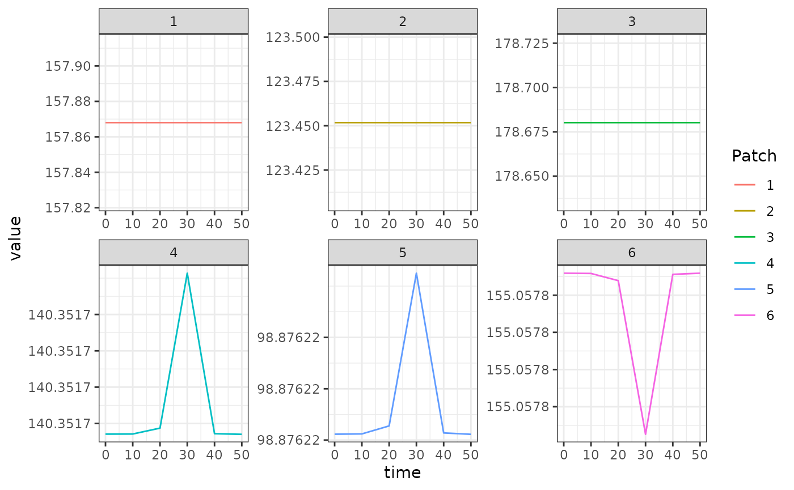

A forced model
This is the null model of aquatic mosquito dynamics; there are no
endogenous dynamics and the model is simply specified by
Lambda, the rate at which adult mosquitoes spontaneously
emerge from aquatic habitats.
Below we show an example, taken from the package tests, of using the trivial-based aquatic model to keep an adult mosquito model at equilibrium when using unequal numbers of aquatic habitats per patch.
The Long Way
First, we set the parameter values.
nPatches <- 3
nHabitats <- 4
membership = c(1,2,3,3)
HPop = 1000
calN <- matrix(0, nPatches, nHabitats)
calN[1,1] <- 1
calN[2,2] <- 1
calN[3,3] <- 1
calN[3,4] <- 1
calU <- matrix(0, nHabitats, nPatches)
calU[1,1] <- 1
calU[2,2] <- 1
calU[3:4,3] <- 0.5
f <- rep(0.3, nPatches)
q <- rep(0.9, nPatches)
g <- rep(1/20, nPatches)
sigma <- rep(1/10, nPatches)
mu <- rep(0, nPatches)
eip <- 11
nu <- 1/2
eggsPerBatch <- 30
MYZo = list(
g=g, sigma=sigma, mu=mu, f=f, q=q, nu=nu, eggsPerBatch = eggsPerBatch
)
calK <- matrix(0, nPatches, nPatches)
calK[1, 2:3] <- c(0.2, 0.8)
calK[2, c(1,3)] <- c(0.5, 0.5)
calK[3, 1:2] <- c(0.7, 0.3)
calK <- t(calK)
Omega <- compute_Omega_xde(g, sigma, mu, calK)
Upsilon <- expm::expm(-Omega * eip)
kappa <- c(0.1, 0.075, 0.025)
Lambda <- c(5, 10, 8)Next, we calculate equilibrium values following the Ross-Macdonald vignette. We use \(\mathcal{N}\) and \(\mathcal{U}\) to describe how aquatic
habitats are dispersed amongst patches, and how mosquitoes in each patch
disperse eggs to each habitat, respectively. Please note because we have
unequal numbers of aquatic habitats and patches, we use
MASS::ginv to compute the generalized inverse of \(\mathcal{N}\) to get \(\alpha\) required at equilibrium.
# equilibrium solutions
Omega_inv <- solve(Omega)
M_eq <- as.vector(Omega_inv %*% Lambda)
P_eq <- as.vector(solve(diag(f, nPatches) + Omega) %*% diag(f, nPatches) %*% M_eq)
# the "Lambda" for the dLdt model
alpha <- as.vector(ginv(calN) %*% Lambda)Now we set up the model. Please see the Ross-Macdonald vignette for details on the
adult model. We use alpha as the Lambda
parameter of our forced emergence model, in
ramp.xds::make_parameters_L_trivial. Again, because we are
not running the full transmission model, we must use
ramp.xds::MosquitoBehavior to pass the equilibrium values
of those bionomic parameters to
ramp.xds::xDE_diffeqn_mosy.
params <- make_xds_template("ode", "mosy", nPatches, membership)
params = setup_Lpar("trivial", params, 1, Lopts = list(Lambda=alpha))
params = setup_Linits(params, 1)
params = setup_MYZpar("basicM", params, 1, MYZopts=MYZo)
params = setup_MYZinits(params, 1, list(M=M_eq, P=P_eq))
params = setup_Xpar("trivial", params, 1, list(HPop=HPop))
params = make_indices(params)
params$kappa = list()
params$kappa[[1]] = kappa
params <- change_calK(calK, params)
y0 <- get_inits(params)
y0
#> $L
#> list()
#>
#> $MYZ
#> $MYZ$M
#> [1] 157.8680 123.4518 178.6802
#>
#> $MYZ$P
#> [1] 140.35170 98.87622 155.05779
#>
#>
#> $X
#> numeric(0)
out <- deSolve::ode(y = get_inits(params, flatten=TRUE), times = seq(0,50, by=10), func = xde_derivatives, parms = params, method = 'lsoda')
out1 <- out
colnames(out)[params$ix$MYZ[[1]]$M_ix+1] <- paste0('M_', 1:params$nPatches)
colnames(out)[params$ix$MYZ[[1]]$P_ix+1] <- paste0('P_', 1:params$nPatches)
out <- as.data.table(out)
out <- melt(out, id.vars = 'time')
out[, c("Component", "Patch") := tstrsplit(variable, '_', fixed = TRUE)]
out[, variable := NULL]
ggplot(data = out, mapping = aes(x = time, y = value, color = Patch)) +
geom_line() +
facet_wrap(. ~ Component, scales = 'free') +
theme_bw()
Using Setup
Lo = list(
Lambda = alpha
)
MYZo = list(
f = 0.3,
q = 0.9,
g = 1/20,
sigma = 1/10,
eip = 11,
nu = 1/2,
eggsPerBatch = 30,
M=M_eq,
P=P_eq
)
xds_setup_mosy(MYZname = "basicM", Lname = "trivial",
nPatches = 3, membership = c(1,2,3,3),
MYZopts = MYZo, calK = calK, HPop=HPop, Lopts = Lo,
kappa = c(0.1, 0.075, 0.025))->mosy1
xds_solve(mosy1,Tmax=50,dt=10)$outputs$orbits$deout -> out2